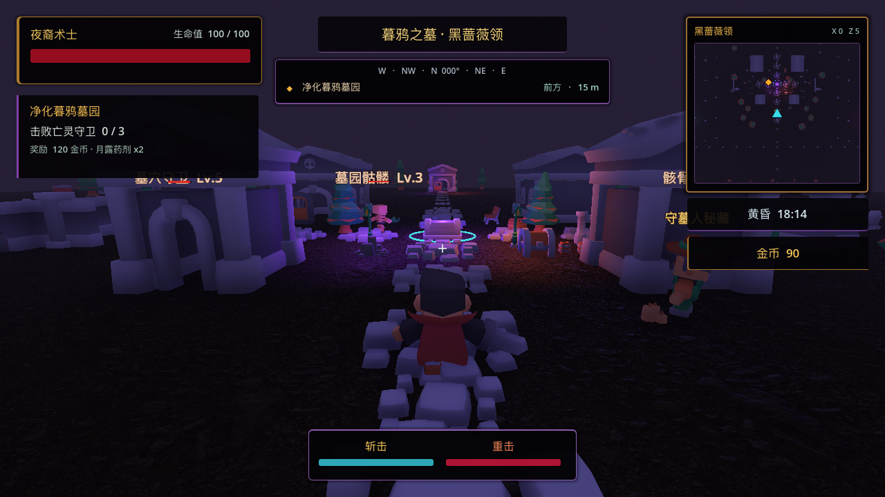

三类区域承担不同节奏
安全主城负责接取与整备，开放野外负责探索和随机遭遇，封闭副本负责高强度挑战与首通奖励。

安全主城负责接取与整备，开放野外负责探索和随机遭遇，封闭副本负责高强度挑战与首通奖励。
目标追踪、导航、采集、击杀、背包条件和交付结算共用一套状态规则，避免任务只是一段对话。
斩击和重击拥有独立伤害、范围、冷却与命中反馈；普通敌人与 Boss 采用不同强度层级。
分离摇杆与镜头区域，控制拇指可达范围、弹窗输入阻断和 20:9 安全区，并按 P0/P1/P2 验收。
Vertical Slice
开放区域与封闭副本分别验证探索视野、敌人密度和近战反馈。